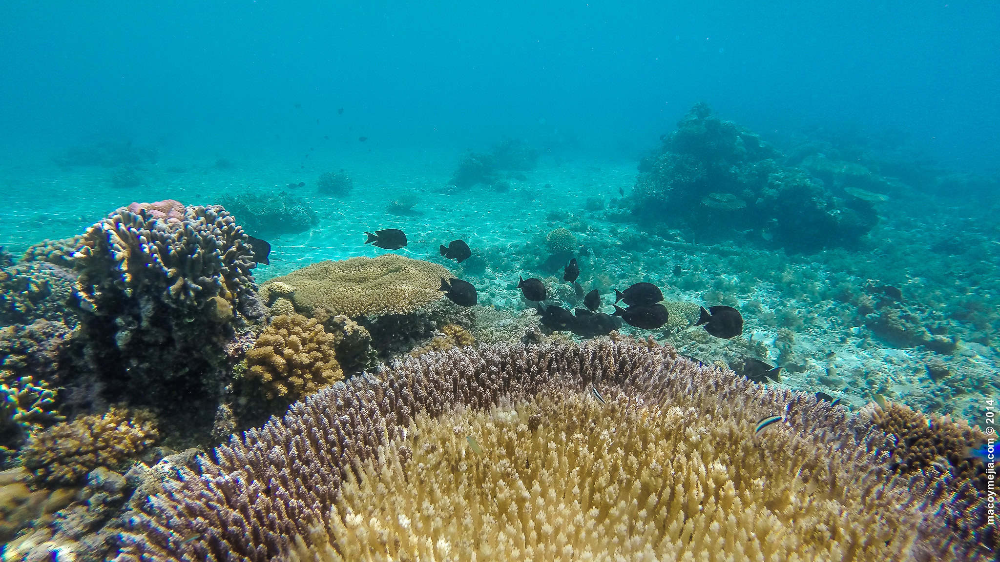

Karl
Betta
2.8 Inches
Thailand, Cambodia, Laos and Vietnam
worms, daphnia, bloodworms, brine shrimp, mosquito larvae and other fish
If you give a person a fish, they'll fish for a day. But if you train
a person to fish, they'll fish for a lifetime.

Apo Reef
Apo Reef is the largest coral reef in the Philippines! It spreads over an area of 34 square kilometres, making it the second
largest connecting coral reef in the world (the first place being occupied by the Great Barrier Reef of Australia).
The Apo Reef, also considered as the second largest atoll-like reef in the Philippines comprises of two isolated coral reefs
that are disconnected by a 30-meter deep channel. The clear blue waters of the channel are teeming with 285 species of colourful marine life,
including tropical aquarium fish, snappers and the crevice-dwelling moray.